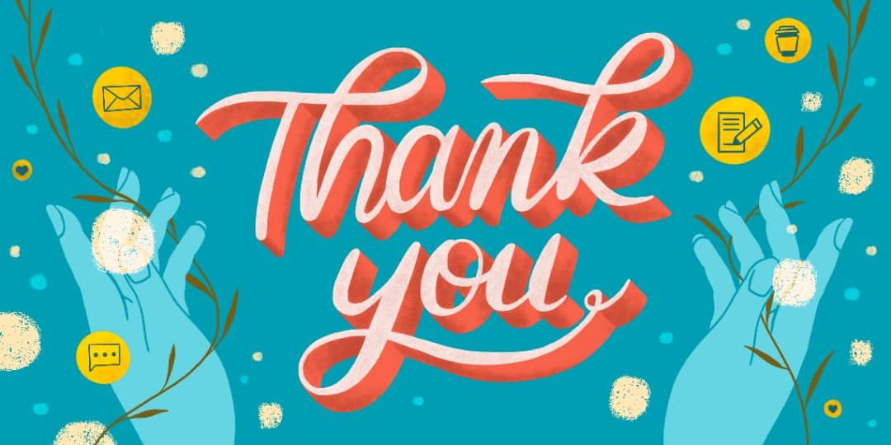

Assalamualaikum and have a nice day today
My name is Nur Asmaa binti Sukri. I am 23 years old and still study for my degree now. My first education is at Sekolah Kebangsaan Pulau Gajah for primary school.
After that, i go to secondary school at Sekolah Kebangsaan Kemumin from form 1 to form 5. I continue my study in diploma for 3 years in Civil Engineering at UITM
Jengka,Pahang and now i stay study for my degree in UITM Kota Bharu. This year is my second year in UITM Kota Bharu and i will graduate one years from now. May
Allah bless my degree journey. If you want to see where i am study now, you can click the button below.
The person in that picture is my family. I have a biggest family. My father name is Sukri bin Abdullah and he work as fishermen. He is 53 years old and my mother is
51 years old. My mother is a full time housewife. I have 5 sibling and i am the fourth child for my parents. My first sister and second brother is already married. I have
6 nephew already in this year. I love my family so much.
I will let you know about myself in this writing. I am :
First, i am a friendly person because if i go anywhere i can make new friend at that place immediately. For example, if i go to cooking class, at the first day i will talk
without any shame with another person in that class. I will talk to them like i have know them for a long time. I really like to have many friends because with friends,
my life will happy and i will get to know about another person attitude.
The second feature about myself is i am trying hard person. Why i am saying this because if i what something i must get it such as i want to have new handbag so i will
save my money to get the handbag. Another example is when i am missed in my study, i will learn again until i understand the matter. I am not satisfied until i get what
i need. I am grateful that i have this feature in myself because it make me excited everyday.
Lastly, i am the person that really appreciate time. Time is like gold because if you miss that time, whatever you do you cannot bring that time again. I really dont like a
person that cannot appreciate time for example when that person promise with me to go out, and they cannot keep their promise to came at the time. When i promise with
someone to see out there, i will at the promise time. I also always go to class before the lecturer come because if i am late, i miss my study.
That all my writting for today, i will see you next time. If u have interest to know about me in detail, you can whatsapps me with the link below because i am really like to
making new friends. Thank you for your time to reading my article.
See you again.
